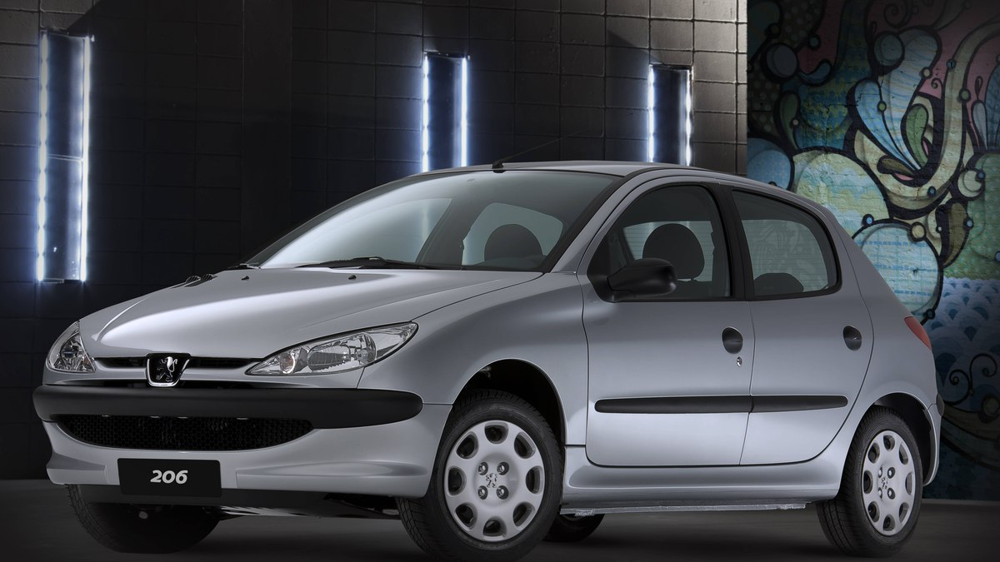
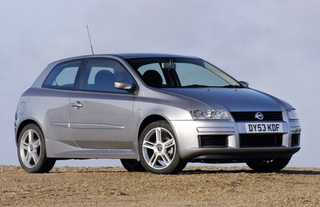
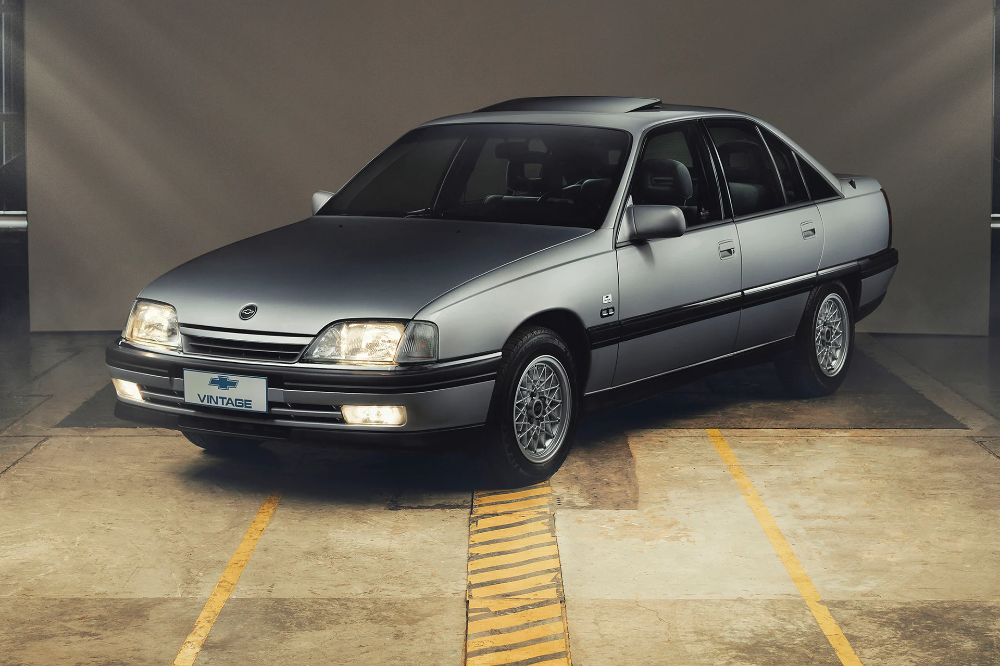
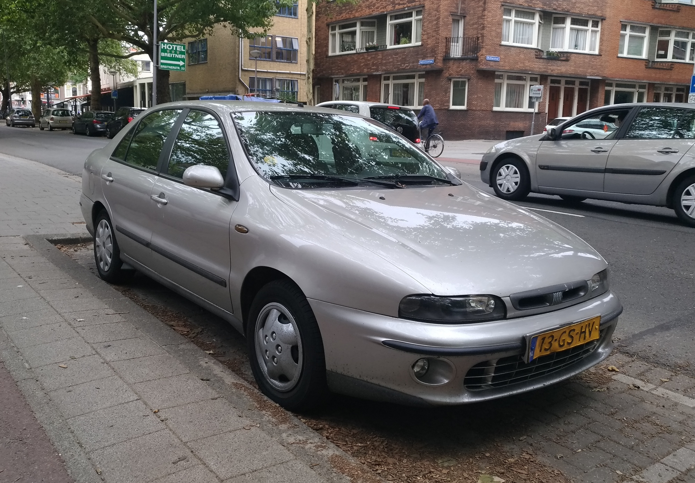
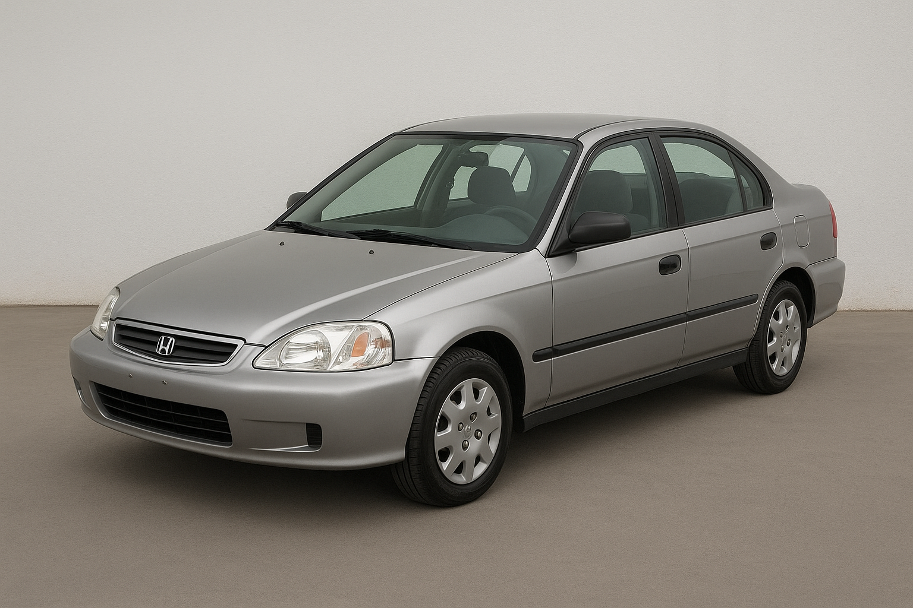
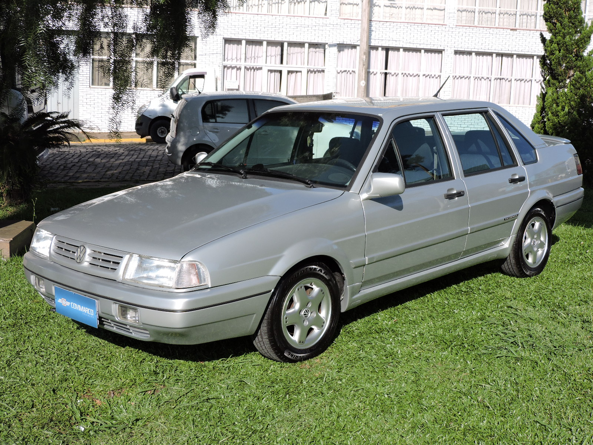

Carros dos Anos 2000

Chevrolet Vectra B
Sedan brasileiro que marcou os anos 90 e 2000, conhecido pelo conforto, acabamento e motores de até 2.2 16V. Uma das presenças mais marcantes da Chevrolet naquela época.

Peugeot 206
Compacto e marcante, o Peugeot 206 fez sucesso no Brasil nos anos 2000, mas também ganhou fama de “bomba” pelos problemas de manutenção e suspensão. Mesmo assim, virou um dos Peugeot mais lembrados por aqui.a

Fiat Stilo
Moderno e cheio de estilo, o Fiat Stilo marcou os anos 2000 com seu design diferente, bom espaço interno e diversas versões. Também ficou conhecido pelo teto solar Sky Window e pelo visual que ainda chama atenção.
Chevrolet Astra
O Chevrolet Astra foi um dos hatchbacks mais populares do Brasil nos anos 2000. Conhecido pelo desempenho, conforto e visual esportivo, ganhou fama entre os jovens e até hoje é muito lembrado pelos fãs de carros.
Volkswagen Bora
O Volkswagen Bora conquistou espaço no Brasil com seu visual elegante, bom desempenho e acabamento. Equipado com motor 2.0, ficou conhecido pelo conforto e pela durabilidade, sendo um dos sedãs marcantes dos anos 2000.
Chevrolet Corsa
O Chevrolet Corsa foi um dos compactos mais populares do Brasil nos anos 2000. Econômico, simples e confiável, conquistou muitos motoristas e se tornou um dos carros mais comuns e queridos das ruas brasileiras.

Chevrolet Omega
Luxuoso, potente e cheio de presença, o Chevrolet Omega foi um dos sedãs mais marcantes do Brasil. Com conforto de sobra e motores fortes, conquistou fama entre os apaixonados por carros e virou um verdadeiro clássico das ruas.

Fiat Marea
Com visual elegante e motores potentes, o Fiat Marea marcou os anos 2000 no Brasil. Ficou especialmente famoso pelo motor 2.0 20V, desempenho forte e também pela polêmica fama de “bomba” entre os apaixonados por carros.

Honda Civic
O Honda Civic foi um dos grandes sonhos de consumo dos anos 2000. Com visual moderno, motor forte e excelente dirigibilidade, conquistou uma legião de fãs e se tornou um dos carros mais desejados daquela época.

Volkswagen Santana
O Volkswagen Santana foi um dos sedãs mais respeitados do Brasil. Confortável, espaçoso e com presença marcante, atravessou os anos 90 e 2000 mantendo seu lugar entre os carros mais conhecidos das ruas brasileiras.
Volkswagen Golf
O Volkswagen Golf conquistou uma geração com seu visual esportivo, acabamento e desempenho. Nos anos 2000, virou sonho de consumo entre os jovens apaixonados por carros, principalmente pelas versões mais potentes e pelo estilo que se destacava nas ruas.
Chevrolet Zafira
A Chevrolet Zafira marcou os anos 2000 como uma das minivans mais desejadas do Brasil. Espaçosa, confortável e com capacidade para até sete passageiros, conquistou famílias que queriam um carro completo sem abrir mão de desempenho e estilo.